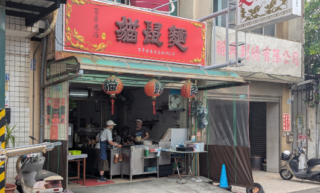
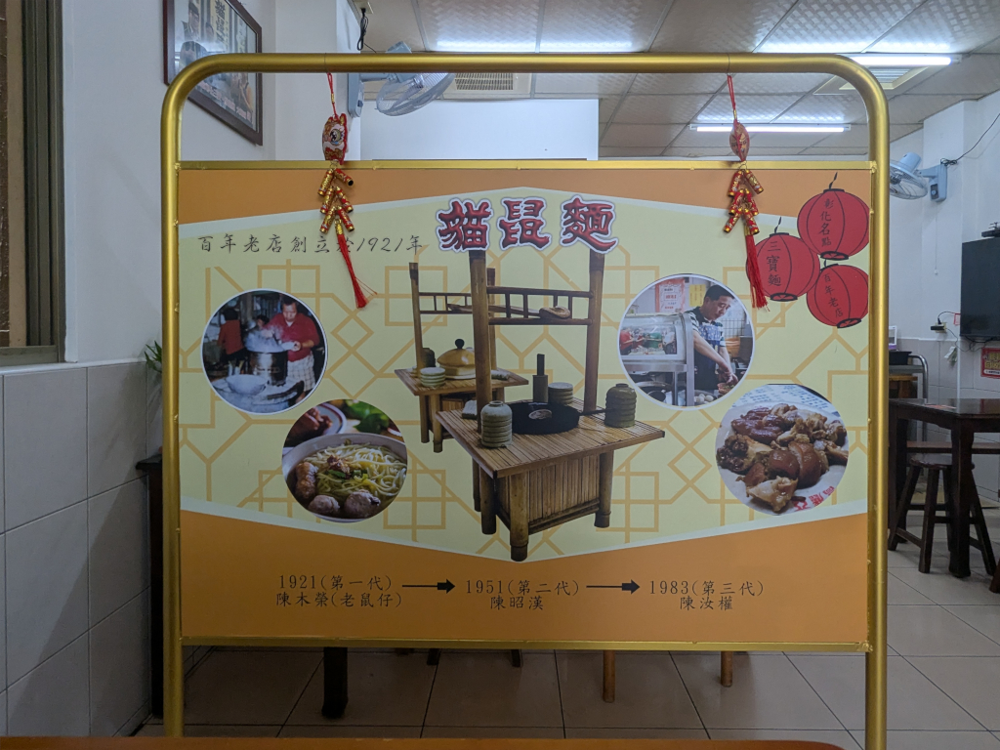

|
 The Story of 貓鼠麵 April 13, 2026 When we visited the 貓鼠麵 (Cat-Mouse Noodles) Restaurant in 彰化 for lunch one day, the below sign stood prominently next to our table noteYou can click on it to see it better. :
 The contents of the sign are as follows:
Mei-O told me it had the background of how the original 老鼠麵 (Mouse Noodles) got its name, and its history thereafter. Meihui filled us in on some other parts of the story. The sign explains that the founder, 陳木榮, nicknamed 老鼠仔 (Little Mouse), started the restaurant in 1921. Because of his nickname, he called his signature noodle dish 老鼠麵 (Mouse Noodles) and named the restaurant accordingly. Some time later, perhaps during the 2nd generation's ownership, the idea of "mouse noodles" sounded wrong, and, and this has something to do with the relationship of the pronunciation of 老鼠 (mouse) and 貓 (cat) in Mandarin and Taiwanese, the name was changed to 貓鼠麵 (cat-mouse noodles: "laoshumian" became "maoshumian". In Taiwanese, they both sound almost the same!) which the restaurant is now known as, though it still serves "老鼠麵" (mouse noodles). Mei-O has tried to explain the Mandarin-Taiwanese language part of this story to me many timesnoteAs I'm trying to put this page together, right
now she's sitting next to me trying once again, and I'm confused. She basically says you have to be Taiwanese to
understand it, and I think that's probably true. , but I just don't get it, and, in the long run,
I guess it's not important.
|
||||||||||||||||||||||||||||||||||||||||||||||||
;){kind=link}